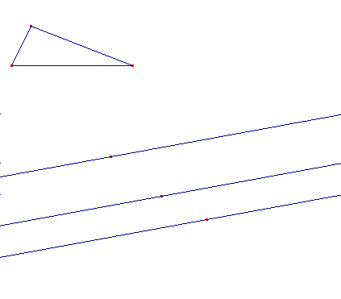
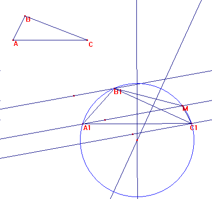

1240.- Construir un triángulo cuyos vértices están en tres paralelas dadas y que sea semejante a otro triángulo dado.
García Ardura (1948): Problemas gráficos y numéricos de geometría (Originales en su mayor parte). Madrid. (pág 135)
Solución de García Ardura (1948).
Consideremos un triángulo y las tres rectas paralelas:

Supongemos resuelto el problema, y tracemos la circunferencia circunscrita.:

El cuadrilátero A1B1MC1 donde M es el "otro" punto sobre la recta intermedia, aporta la solución, ya que es:
< B1M A1= < B1C1A1, y por otra parte: < A1M C1= < A1B1C1.
Así, pues, la solución se tiene tomando un punto M sobre la recta intermedia, y trazando dos ángulos del triángulo con un lado sobre la misma.
Los puntos de corte con las otras dos rectas de los ángulos correspondeintes y la circunferencia circunscrita , nos darán las tres soluciones: